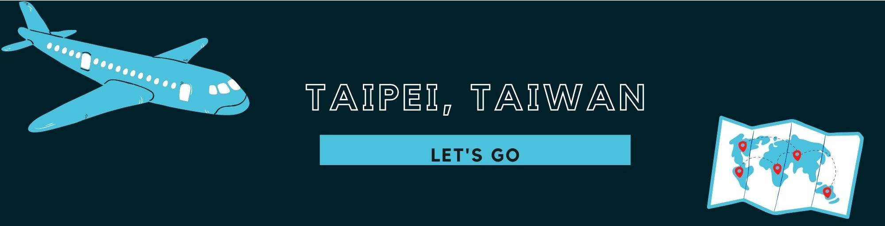
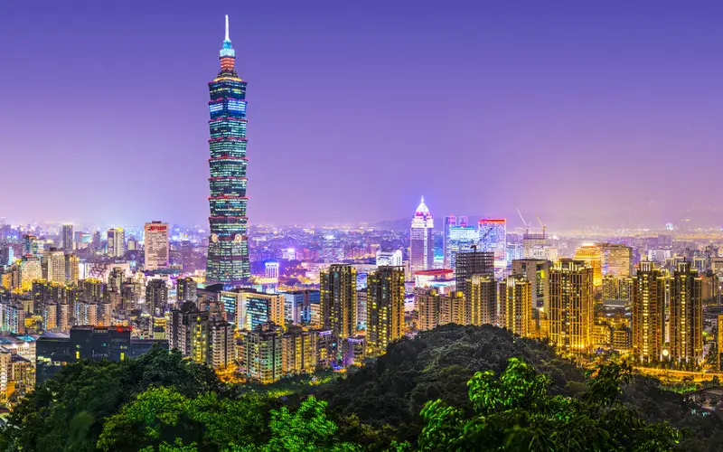
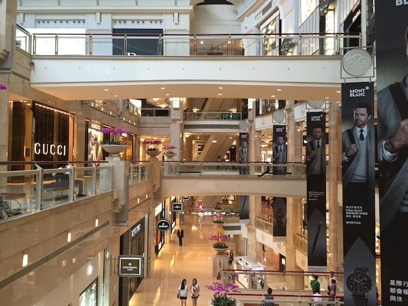
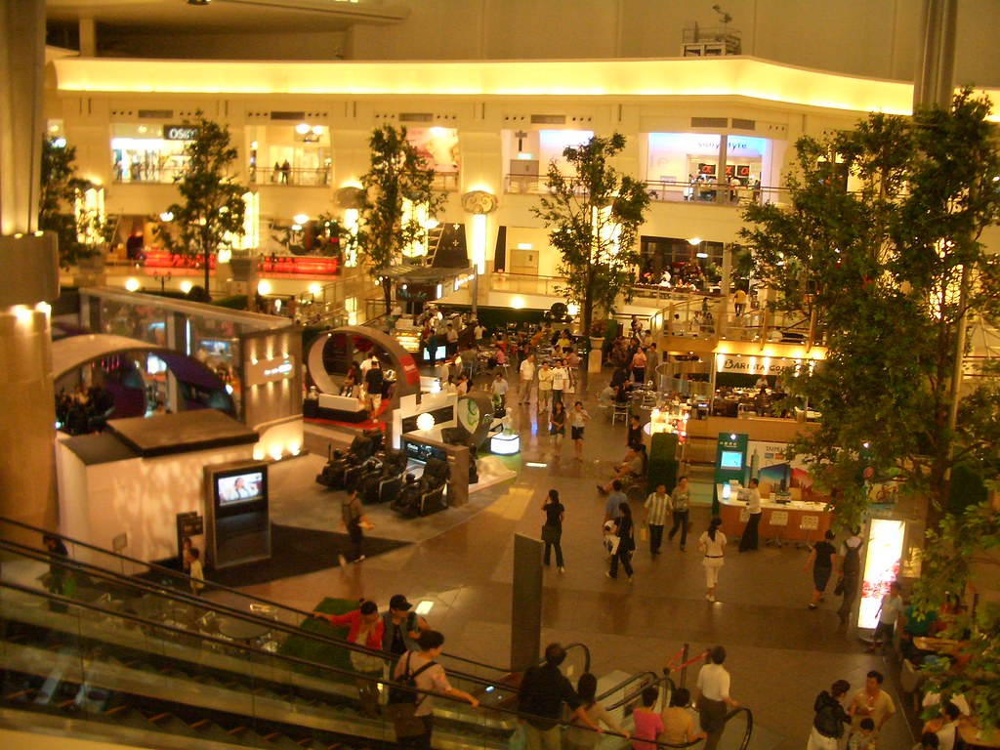
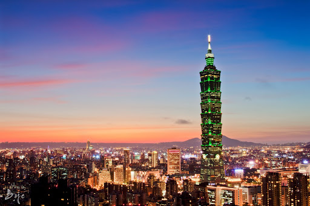
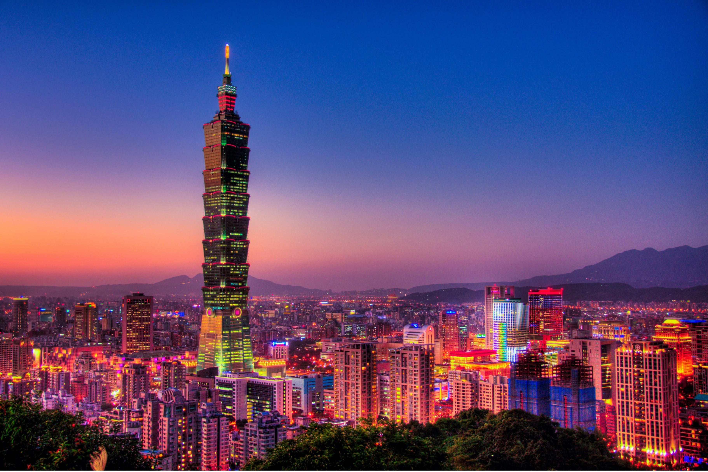
Taipei 101
Taipei 101, formerly Taipei Financial Center, office building in Taipei, Taiwan (Republic of China).
Designed by C.Y. Lee & Partners, a local architectural firm, the skyscraper has 101 stories and reaches a height, including the spire, of 1,667 feet (508 metres).
At the time of its official opening in October 2004, it was the world’s tallest building, having surpassed the Petronas Twin Towers in Kuala Lumpur, Malaysia.
In 2007 it was exceeded by the Burj Khalifa, then being built in Dubai, United Arab Emirates.
While under construction, Taipei 101 was known as Taipei Financial Center.

Inside the Taipei 101
The lowest aboveground floors of Taipei 101 house a luxury atrium shopping mall.
Most of the floors above the mall are devoted to office space. The public observatories are on floors 88 to 91,
with an indoor observatory on 89 and an outdoor observatory on 91. At a height of 1,285 feet (392.8 metres),
the outdoor observatory was the highest in the world at the time of completion.
Another indoor observatory, not open to the public, is on the top (101st) floor and is 1,437 feet (438 metres) high.
There are 7 ways to get from Taiwan Taoyuan Airport (TPE) to Taipei 101, you can ride in Train, Subways, Bus, Taxi, Car or Town Car.
The approximately time to get there is less than an hour if you ride in Taxi, Town car and if Drive but is it more expensive,
and when you ride in Train, subway or bus you can get there more than an hour and it is inexpensive.
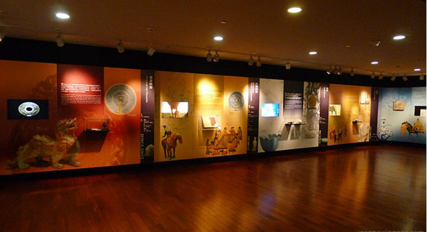
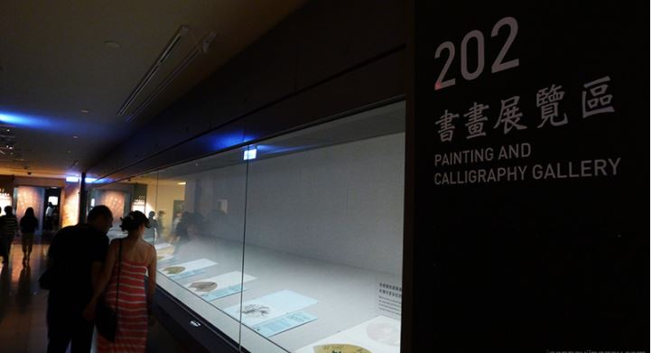
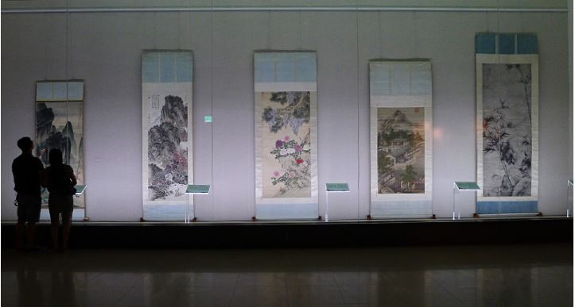
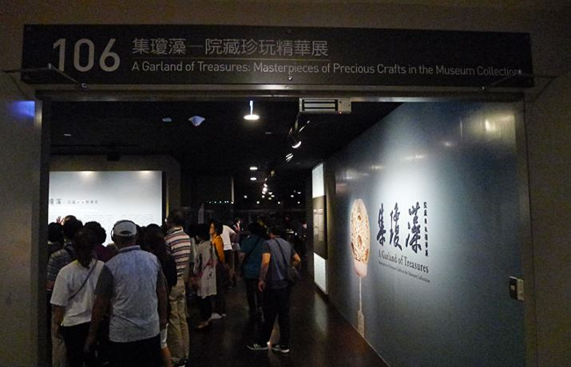
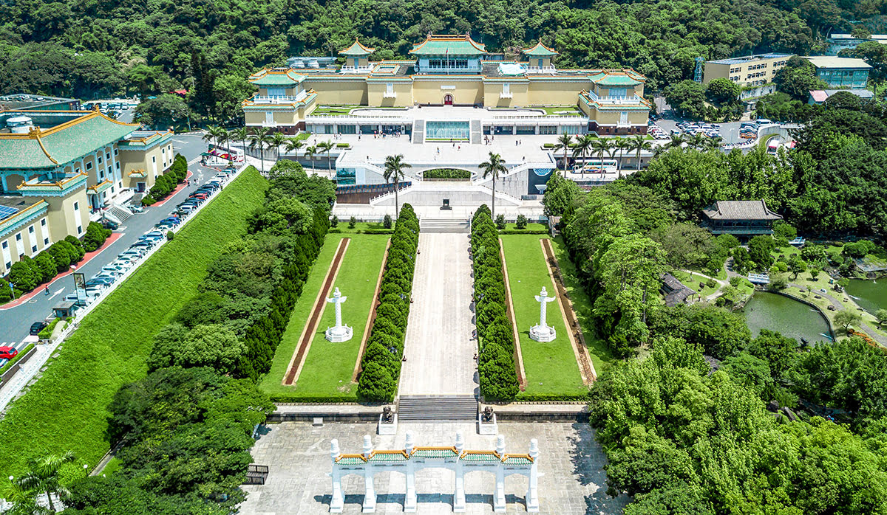
National Palace Museum
The museum came into being in 1965 when the collections of Taiwan’s National Palace Museum,
the Central Museum, and other public Taiwanese cultural institutions were brought together in a new museum building in Taipei;
the combined collections were called the National Palace Museum. The core of the museum’s art holdings once formed part of the imperial art collection in Beijing,
which in turn derived primarily from the far-flung collecting activities of the Qing- (Manchu-) dynasty emperor Qianlong (reigned 1735–96).

Inside the National Palace Museum
National Palace Museum, major art museum of China, at Taipei, that preserves many of the art holdings of the Chinese imperial collection.
The museum houses more than 650,000 art objects and documents that were formerly held at Beijing.
The National Palace Museum’s collection illustrates more than 4,000 years of Chinese art, from the Shang through the Qing dynasty.
Its collection of Chinese painting is one of the finest in the world, with many important masterpieces from the Tang, Song, Ming, and Qing dynasties.
The museum also has large collections of Chinese ritual bronzes, ceramics, jade, lacquerware, enamelware,
decorative carvings, embroidery and tapestry, books, calligraphy, and archival documents.
There are 5 ways to get from Taiwan Taoyuan Airport (TPE) to National Taiwan Museum by riding in train, bus, taxi, car or towncar.
The approximately time to get there is less than an hour if you ride in Taxi, Town car and if Drive but is it more expensive,
and when you ride in Train or bus you can get there more than an hour and it is inexpensive.
Go back to Map Page.